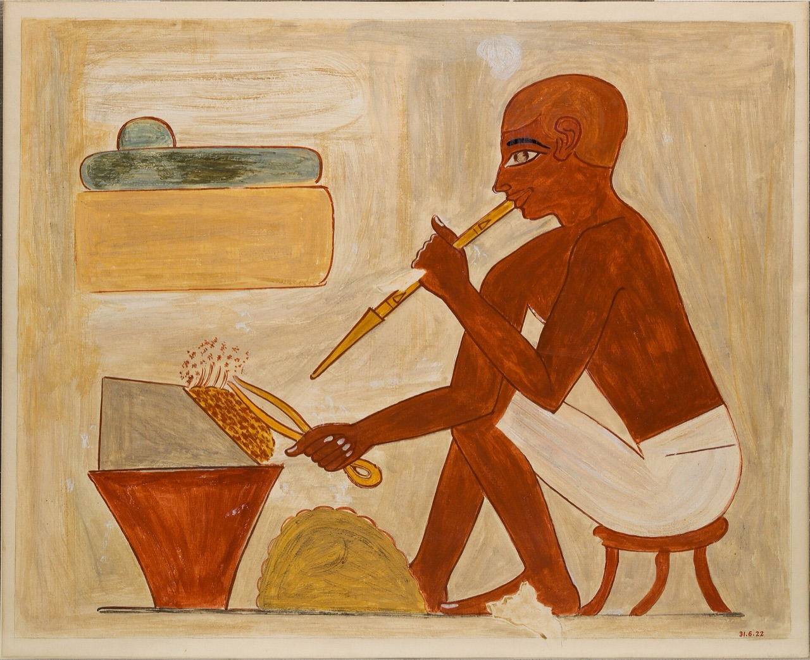
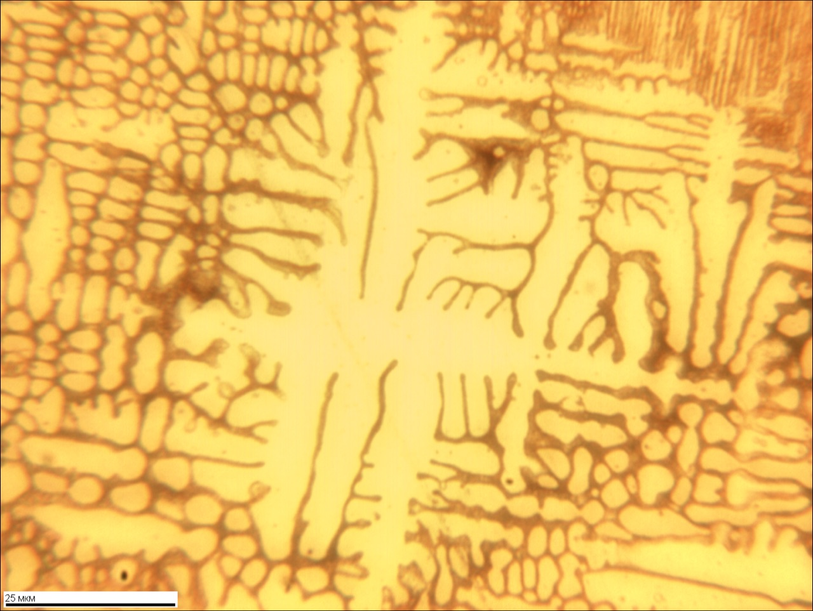
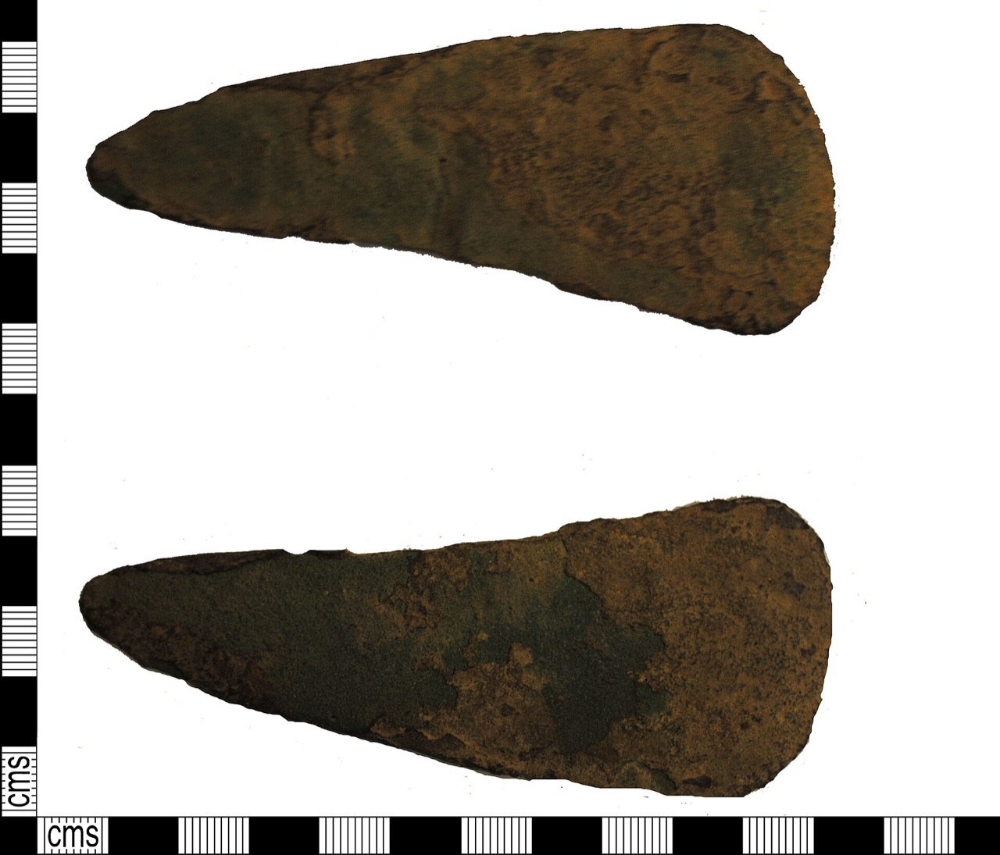

Copper hidden in green stone
Chapter two ended with a limit. An object could not be bigger than its nugget. Beside native copper in the ground lie coloured stones. The bright green one is called malachite. The blue one is azurite. Sometimes pieces of native copper are set in these stones.

Two pieces of malachite from Katanga in the Democratic Republic of the Congo. The left piece has a natural rounded surface, like stone a smelter would see. The right piece was cut and polished to reveal its green bands.
Photo: Didier Descouens, CC BY-SA 3.0, Wikimedia Commons

Long before people learned to get copper from stone, they made beads from malachite and azurite. At Çatalhöyük in present-day Turkey, they did this in the 7000s BCE. Malachite has also served since antiquity as a green pigment, a material that gives paint its colour.
Around 5000 BCE, people began to get copper out of such stones with fire. This happened somewhere in south-eastern Europe or Asia Minor. The oldest securely dated evidence comes from Belovode in Serbia. This settlement belonged to a group of people known as the Vinča culture. The date is about 5000 BCE.
Copper objects from Yumuktepe, made by pouring liquid metal, date to about the same time. This is a mound in Mersin, in present-day Turkey. Their inner structure has been read as a sign that the copper came from stone. But no waste from getting copper out of stone has been found there, so this remains a claim, not secure evidence.
We do not know how people found the method. One common story starts with an accident in a potter’s kiln, an oven for firing clay pots. But strong heat is not enough. The stone must also be in a part of the fire starved of air. And who would search the ashes for small red beads? The accident may have happened, but the story is not a known event. What is known is the date: about seven thousand years ago.
A stone from which metal can be got is called ore. Getting metal out of ore with heat and charcoal is called smelting. Charcoal is the black fuel made by heating wood with very little air. We will look at it more closely below.
Smelting is not melting. Melting only turns a solid into a liquid. Melted ore is still ore. Smelting takes the ore apart and leaves the metal.
Melting copper and pouring it into a shape is called casting. It appears in the finds at about the same time as smelting.
A hotter fire, a bowl, and a mould
Why a campfire is not enough
A campfire is not hot enough to melt copper. In chapter two, its flames and embers reached 600 °C and above. A single ember may be hotter. But the whole piece of copper must reach 1085 °C to melt.
Three things help: different fuel, moving air and walls around the fire.
Fuel. Use charcoal instead of wood. To make it, heat wood with very little air. Water and everything that can leave as gas leave the wood. A light black material remains. It is mostly carbon, C, which we met in chapter two.
Air. Charcoal has many small holes. Moving air makes it burn strongly. Control the air stream, and you control the heat. Charcoal can burn above 1100 °C.
Walls. Keep the heat in. Without walls, too much heat escapes from the place where the copper sits. A bed of charcoal with air forced through it can reach 1200 to 1300 °C.
A blowpipe is a tube a person blows through into the charcoal. A hollow reed with a clay tip is enough. The first smelters are usually thought to have used blowpipes, but none survive from the earliest smelting. A person’s lungs supply little air. An Egyptian picture from about 2400 BCE shows six people blowing to keep one small clay bowl of metal hot.

A modern painted copy of a scene from Rekhmire’s tomb in Egypt, about 1504–1425 BCE. The seated worker blows through a tube into a fire and holds a tool for gripping hot things. This is a different, much later scene than the picture of six people described above.
Source: The Metropolitan Museum of Art, copy by Nina de Garis Davies, CC0, Wikimedia Commons

Bellows are a device that pushes air when squeezed. They may have been used just as early as blowpipes. One person with bellows moves far more air than one person with a blowpipe.
A glow alone does not mean copper can melt. It begins to glow at 525 °C, well before it reaches its melting temperature.
Smelting in a bowl
The simplest smelting needs a clay bowl about the size of a salad bowl. This heat-resistant container is called a crucible. Add crushed malachite, charcoal and a blowpipe. The earliest crucibles come from eastern Europe and Iran, in the sixth or fifth millennium BCE. They are wide, shallow clay bowls. Their shape suits heating from above.
The first crucibles used ordinary pottery clay, with no special resistance to heat. Clay does not burn. Great heat softens it and turns part of it into glass. With still more heat, it flows. At smelting heat, this clay is close to its limit. At about 1200 °C, a clay air tip and a clay lid melted, as did the crucible’s surface facing the air blast. But clay carries heat poorly. Only a thin surface layer melts, so the wall beneath stays solid and holds the contents. Clay that withstands more than 1500 °C is called fire clay.
Heap charcoal in the bowl. Light it and blow. Add ore. Keep blowing here and there. With luck, a spot stays hot enough for long enough to make a little copper. The result is some glassy waste and a few small metal beads. These beads are called prills.
The glassy waste is slag. It comes from melted stone that was mixed with the ore, ash and bits of the bowl. Very early smelting on this small scale may have left very little slag.
Much of the copper was lost. Early slag still holds a lot of it. In the copper district of Faynan in present-day Jordan, slag from Roman times holds much less copper than slag from the first smelters there. It took several thousand years to reach that result. People who repeat early smelting today do not always succeed.
Pouring copper into a shape
Casting needs a smaller crucible. It must be small enough to lift while it is hotter than 1085 °C. You need a way to hold very hot things. You also need a mould, a hollow with the shape of the object. Melt the copper and pour it into that hollow. The object made this way is also called a casting.
A modern experiment tried casting with the means of the Copper Age, the time when people began to use copper from ore. The furnace, a place built to hold a very hot fire, was a hole in the ground lined with clay. Charcoal covered the crucible. Leather bag bellows supplied air. None survive from that time, so the air supply followed a find from a later period, the Bronze Age. Melting took from two to three and a half hours.
A split branch served as tongs, a tool for gripping the hot crucible. A green willow shoot was pushed into the copper. By feel, it showed whether solid lumps were left. The moulds were made from clay and sand, two parts clay to one part sand.
The wooden tongs touch the crucible only while lifting it and pouring. There is too little time for the wood to burn through. Freshly cut wood holds much water. Heat first turns this water into steam. Only then can the wood get hot enough to char and burn. The green willow shoot dipped into the liquid copper was freshly cut. Its water helps protect it in the same way.
Not one mould for the early copper axes of south-eastern Europe has been found. One possible reason is that the moulds were made of sand. Sand falls apart and leaves nothing to find.
There is another way to make a mould. Shape the object in wax. Cover it with clay. Heat it so that the wax runs out. Pour metal into the hollow left behind. This is lost-wax casting. Among the oldest known examples are gold objects from the Varna cemetery in Bulgaria, dated to 4550–4450 BCE. Another is a copper amulet, a small object worn for protection, from Mehrgarh in present-day Pakistan. It comes from a layer dated 4500–3600 BCE.

Gold objects from the Varna cemetery, displayed in the Varna Archaeological Museum in Bulgaria. Most visible pieces are hammered sheets of gold. The photograph does not show which objects were cast.
Photo: Zde, CC BY-SA 4.0, Wikimedia Commons

Did metals grow in the earth?
The first smelters left no writing. Working metal began long before writing did. We do not know what those people thought about ores and metals.
Written ideas come much later. Until about 1700, educated Europeans counted four elements: earth, water, fire and air. By this word they meant the basic things from which everything was made. They thought metals were a mixture of earth and water.
Aristotle taught that metals form inside the earth from a breath like vapour. He thought the sun’s heat raised these breaths from the earth. This teaching was still alive around 1500 and spread further through printed books. Alchemists, people who tried to change substances and turn one metal into another, added another idea. Metals slowly “ripen” in the earth. An unripe metal could become a mature one. This led to the long, useless effort to turn lead into gold.
None of this explains why a green stone needs charcoal. The answer had to wait until people understood burning. The French scientist Antoine Lavoisier found the role of oxygen in burning. He was executed in 1794. Chapter eight tells that story. Here we use what he found.
Free the copper, then melt it
What is in the green stone?
In ore, copper atoms are not joined to each other as they are in metal. Atoms of other kinds hold them. That is why the ore behaves like stone. It does not shine or bend. It breaks. We met the same difference in chapter two: copper oxide is not copper metal.
Malachite is written Cu2CO3(OH)2. There is one new letter here: hydrogen, H, is one of the two kinds of atom in water, H2O. For every two copper atoms in malachite, there are one carbon atom, five oxygen atoms and two hydrogen atoms.
Heat alone does part of the work. Malachite gives off carbon dioxide and water as gases. The green stone turns black. What remains is copper oxide, CuO. It is the same substance as the black coating on annealed copper. The equation is Cu2CO3(OH)2 → 2CuO + CO2 + H2O.
But heat alone will not take the remaining oxygen off the copper. Something has to pull it away.
What charcoal does
Chapter two gave a short equation: 2CuO + C → 2Cu + CO2. It said that carbon takes the oxygen. Now we can look at the gas that does the work between the charcoal and the ore.
First, the charcoal burns. Where air comes in, carbon joins with oxygen: C + O2 → CO2. This gives off heat. After air passes through a few layers of burning charcoal, all its oxygen has been used up.
Then a new gas forms. Deeper in the charcoal, no free oxygen is left. Here carbon dioxide meets hot carbon: CO2 + C → 2CO. The new gas is carbon monoxide, CO. Each molecule has one carbon atom and one oxygen atom. The charcoal here needs to be at least about 800 °C, and about 1000 °C for this to work well. This step uses heat, so it cools the fire a little.
The gas takes oxygen from the ore. A carbon monoxide molecule can hold one more oxygen atom. It takes that atom from copper oxide: CuO + CO → Cu + CO2. Taking oxygen away in this way is called reduction. The ore is reduced to metal. In laboratory tests, fine copper oxide powder in carbon monoxide starts turning into copper at about 200 °C. Pieces of ore in a fire react more slowly. Still, reduction happens far below copper’s melting temperature.
So the fire must meet two opposite needs. It needs plenty of air to be hot. But the ore must sit where there is no free oxygen. Deep charcoal does both jobs. Air feeds burning at the edge. Inside, carbon monoxide surrounds the ore. This is why an open fire can fail even when it is hot.
The new copper is solid at first. Small particles of metal with tiny holes form on the ore while nothing is liquid. You cannot melt a metal before you have it. Freed copper atoms move along the surface. They meet a copper crystal and join its rows, or start a new crystal. If the spot is hotter than 1085 °C, the particles melt and run together into a bead.
Carbon monoxide is a deadly gas for people.
Most air is nitrogen, a gas that takes no part in these reactions and only carries heat. Air contains 78 % nitrogen and 21 % oxygen.
Where the grains come from
At 1085 °C, the atoms in copper shake so much that the regular rows break up. That was melting in chapter two. In the liquid, atoms stay close together but have no fixed places. What happens when the liquid cools?
Freezing means turning from liquid to solid. It happens in two steps. First, small groups of atoms line up in regular rows at many places in the liquid. Each small starting group is a nucleus. In a mould, the first nuclei form mostly on the cold mould wall. Then each grows. Atoms from the liquid take places on its surface. Growth continues until no liquid is left.

Copper that froze from liquid, seen through a microscope. The growing crystals branched like trees; the model below draws them as simple circles. The scale bar in the corner is labelled in Russian and marks 25 micrometres, or 25 thousandths of a millimetre.
Photo: Andrew Egorov, CC BY-SA 4.0, Wikimedia Commons
.jpg){kind=link}
Each starting group has its rows pointing in its own direction. When two growing crystals meet, their rows do not match. Each crystal is a grain. The place where they meet is a grain boundary. This is where the grains of chapter one come from.
Copper that cools quickly ends up with many small grains. Slow cooling gives fewer, larger grains.
Something strange happens to the temperature while the metal freezes. Liquid and solid are both present, and heat keeps leaving. Yet the temperature stays at 1085 °C for copper. The freezing itself gives off heat as atoms settle into rows. Only after the last liquid is gone does the temperature fall again.
Most metals take up less space as a solid than as a liquid. So they shrink as they freeze. There is another problem. Liquid metal can hold much gas dissolved in it, spread through the liquid rather than gathered in bubbles. Solid metal cannot hold as much. As it freezes, the gas comes out as bubbles. They remain as holes in the casting. Oxygen taken up from the air adds to the problem. In liquid copper it meets hydrogen and forms steam, which also leaves holes.
How to smelt and cast well
The rules now have reasons. Some keep the ore in the right gas. Others help liquid copper fill a mould and become solid without holes.
Getting copper from ore
- Crush the ore small. Keep pieces small, but do not grind them to dust. Dust blocks gas from passing through the ore and charcoal. The gas reaches only the surface of each piece. Smaller pieces expose more of the ore to it.
- Keep the ore buried in deep charcoal. Blow into the charcoal, not onto the ore. The ore needs carbon monoxide around it, without fresh oxygen. When only melting copper, air can be blown from above onto the charcoal covering it. Keep the copper under charcoal: liquid copper takes up oxygen from air.
- Choose charcoal pieces of about the same size. Small pieces have more surface to burn. But dust blocks the air. Very large pieces let air pass without using up its oxygen.
- Blow steadily. In the casting experiment, the first hour went on learning to keep the air even. While the smelting fire runs, the air supply is the smelter’s only control.
- Keep earth out of the charcoal. Earth melts into glass. This cools the fire and leaves patches where nothing burns.
Making a sound casting
- Dry the mould. Moisture reacts with hot metal and makes hydrogen. It dissolves in the liquid and leaves holes when the metal freezes.
- Do not heat the liquid more than needed. Hotter metal holds more gas. But it also flows further before it freezes. The caster has to find a middle point.
- Warm the mould. In a cold mould, metal can freeze before it fills the shape. This fault is called a misrun. In the experiment, the mould was warmed beside the furnace for the second pour.
- Pour in one smooth stream. Splashing mixes air into the metal.
- Hold back charcoal and dirt. In the experiment, a second stick kept charcoal away from the crucible’s lip. When a heavy crucible needed both hands, charcoal blocked the pour. Slag or dirt caught in the metal makes weak spots.
- Leave a pocket of extra liquid metal above the object. This pocket is a reservoir. Pure metal freezes from the mould walls inward. Shrinking leaves a hollow where the last liquid was. The reservoir must freeze last. It feeds liquid into the shrinking object, so the hollow ends up in the reservoir. Cut that part off afterwards and melt it again.
- Match the crucible to the fire. The fire must heat all the copper. In the experiment, a crucible that was too wide still had a ring of solid copper around its wall after three hours.
What good work looks like. Metal fills every corner of the shape. The surface is dense, not full of holes like a sponge. In the experiment, the first castings were spongy. The last was the most solid. The object itself has no hollow left by shrinking.
More copper, but still soft
The limit of chapter two is gone. Metal can come from stone. There is far more green stone than native copper. Copper is mainly found joined with other kinds of atoms in stones. Only occasionally is it found as native metal.

Both faces of a flat axe found in England, probably copper, dated to about 2400–2100 BCE. It was probably cast in a one-piece open mould and has the same simple shape as the much earlier cast copper axes of south-eastern Europe. The scales along the edges are in centimetres.
Photo: The Portable Antiquities Scheme, photo by Stuart Noon, CC BY-SA 4.0, Wikimedia Commons
_also_known_as_the_early_Bronze_Age_2,400_to_2,100_BC._(FindID_476288).jpg){kind=link}
Small pieces can be melted together into a large one. A broken object need not be lost. Chapter two’s annealing cannot heal a crack. Melting and casting again give the copper another use, just as scraps cut off a casting can be melted again. A shape can be made in a mould and repeated.
New skills join the smith’s work. Someone must find ore, make charcoal, and make crucibles and moulds. Working metal now depends on several other crafts.
Yet for a long time, little changed. Stone tools stayed in the majority through the Copper Age. Early copper tools were probably no better than good tools made of flint, a stone used for tools. Large-scale smelting came much later, in the fourth to third millennium BCE. It used shaft furnaces, tall hollow furnaces filled with ore and charcoal.
Clean cast copper is about as soft as annealed copper. Copper that took up oxygen while liquid becomes somewhat harder and more brittle. To harden it, people still need the hammer from chapter one. And gas holes make pure copper hard to cast cleanly. In chapter four, people mix copper with a second metal. The mixture turns out harder than either metal alone.